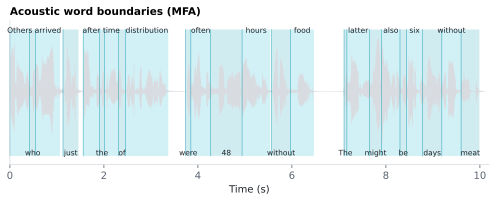

6.1.17Acoustic word boundaries (MFA)
The actual acoustic start and end times of each word in the audio, in seconds from audio onset, from forced alignment of the transcript against the audio with Montreal Forced Aligner (MFA).
6.1.17.1What it is
The actual acoustic start and end times of each word in the audio, in seconds from audio onset, from forced alignment of the transcript against the audio with Montreal Forced Aligner (MFA).
| Column | Meaning |
|---|---|
Onset |
Time the word begins, in seconds from the start of the audio. |
End |
Time the word ends, in seconds from the start of the audio. |
Transcript |
The word form MFA aligned and this row's Onset/End came from (MFA's word-tier label, e.g. numbers spelled out). Empty on PUNCT and unaligned rows. Tokens that MFA aligned as one word (e.g. was + n't) both carry that word (wasn't) and the same Onset/End. No toggle of its own — written whenever alignment runs. |
Words that did not align (silence, OOV, hesitations not in the
transcript) are dropped — they don't appear as rows in the word-level
CSV at all. PUNCT rows are present (from spaCy parsing) but their
Onset / End are NaN.
⚠️ Capitalized
Onset/End(seconds) are not the same as the lowercasestart/endcolumns (character offsets within the sentence). Easy to confuse — two coordinate systems, different units.
6.1.17.2See it

6.1.17.3In your output
| token | Transcript | Onset | End |
|---|---|---|---|
| Others | others | 0 | 0.42 |
| who | who | 0.42 | 0.55 |
| arrived | arrived | 0.55 | 1.07 |
| just | just | 1.13 | 1.46 |
| after | after | 1.56 | 1.91 |
| the | the | 1.91 | 2.01 |
| time | time | 2.01 | 2.31 |
| of | of | 2.31 | 2.46 |
| distribution | distribution | 2.46 | 3.37 |
| were | were | 3.74 | 3.85 |
| often | often | 3.85 | 4.27 |
| 48 | forty eight | 4.27 | 4.94 |
6.1.17.4MATLAB
% Load the word-level table (one row per word)
T = readtable('word/LJ002-0321_features.csv', 'TextType', 'string');
T.Properties.VariableNames % every column in the file
head(T(:, {'token', 'Transcript', 'Onset', 'End'}), 10) % this feature's columns (first rows)
% Plot
ok = ~isnan(T.Onset); % aligned words
for i = find(ok)'
patch([T.Onset(i) T.End(i) T.End(i) T.Onset(i)], [0 0 1 1], [0 .7 .82], 'FaceAlpha', .3, 'EdgeColor', 'none');
text(mean([T.Onset(i) T.End(i)]), 1.05, T.token(i), 'HorizontalAlignment', 'center');
end
xlabel('Time (s)')
6.1.17.5In the code
Source: sensi/extractors/aligner.py:align_with_phones. TextGrid parsing:
sensi/utils/textgrid_parser.py:parse_words.
What the code does:
- Prepares the transcript for MFA via
utils.transcript_prep:prepare_for_aligner— number-spelling ("42" → "forty-two"), whitespace normalization, and any other tokenizer-friendly fixes MFA expects. - Writes the audio and the prepared transcript to a temporary
directory in the layout MFA expects (
.wav+ matching.labfile). - Invokes MFA as a subprocess against the
english_us_arpaacoustic model andenglish_us_arpadictionary (Kaldi-based, ships via conda). - Parses the resulting
.TextGridfile withutils.textgrid_parser:parse_words, which extracts every non-silence word interval and returns one row per word withTranscript / Onset / End. - The temp directory is cleaned up after the run.
In a run (a folder of stimuli, via the GUI or run.py), alignments are persisted and reused rather than
recomputed: sensi/extractors/aligner.py:ensure_alignments writes each
stimulus's .TextGrid + a content-hash freshness sidecar to
<output_folder>/Montreal Forced Alignment/, and a later run against
unchanged transcript+audio content re-reads the cached TextGrid instead
of re-invoking the MFA subprocess. This also means the whole batch's
alignment runs in one MFA subprocess (one Kaldi model load) rather
than once per document. Only a direct run() call with no output folder
(as in some tests) has no persistence directory and aligns fresh.
Each stimulus is staged in its own speaker folder inside that one MFA
run (sensi/extractors/aligner.py:_stage). MFA names the speaker after the
folder and computes feature normalization (CMVN) and its speaker-adaptation
transform (fMLLR, a second alignment pass) per speaker. With one folder per
stimulus, every recording is normalized and adapted from its own audio
only, so its Onset/End do not depend on which other recordings share
the batch. Before 2026-10-21 all stimuli sat in one folder and MFA pooled
them as a single speaker, which shifted some word boundaries by up to
~80 ms depending on batch composition. TextGrids from that layout are
re-aligned once (sidecar version 3).
This is also the upstream step for the syllable and phoneme
sidecars and for the prosody extractors — they all consume the same
.TextGrid (via parse_phones for the sub-word tier).
Why:
- MFA over Gentle / Aeneas / heuristic alignment — MFA is the current state-of-the-art for acoustic forced alignment with active maintenance and good documentation (McAuliffe 2017). Heuristic time-warp alignment (e.g. scaling text to audio duration) introduces 50–200 ms errors that smear EEG responses unacceptably for word-level analysis.
- English-US ARPA acoustic + dictionary models — chosen for spoken English stimuli (audiobook, podcast, spoken narration, etc). Other locales would require swapping the model names and possibly the dictionary.
- Silence intervals dropped — they would otherwise appear as
<eps>or empty-label rows in the TextGrid; downstream code is simpler if the word-level CSV contains only actual words.
6.1.17.6Library
# Manual MFA invocation
mfa align <corpus_dir> english_us_arpa english_us_arpa <output_dir>
# Programmatic use in this project:
from extractors.aligner import align_with_phones
words_df, phones_df = align_with_phones("stimulus.wav", transcript_text)
# words_df columns: Transcript, Onset, End
6.1.17.7EEG rationale
Accurate word-onset times in audio are the anchor for every
word-locked EEG/MEG analysis of naturalistic listening. The N400,
P200, and other word-locked components are all defined relative to
audio onset, and ms-level errors in Onset translate directly into
smeared / mis-aligned event-related responses.
MFA's onset estimates are derived from phoneme-level acoustic models (McAuliffe 2017), so they reflect real acoustic boundaries — not heuristic guesses from text-to-time interpolation. Published naturalistic-EEG / MEG analyses of continuous speech rely on this kind of alignment precision to regress neural responses against per-word linguistic features (Broderick 2018, Heilbron 2022).
End is the symmetric per-word audio offset; word duration
(Word_Duration) is End − Onset.
6.1.17.8Papers
- McAuliffe 2017 McAuliffe, Socolof, Mihuc, Wagner, Sonderegger. Montreal Forced Aligner: trainable text-speech alignment using Kaldi. Interspeech 2017. doi:10.21437/Interspeech.2017-1386 — the MFA tool itself.
- Broderick 2018 Broderick, Anderson, Di Liberto, Crosse, Lalor. Electrophysiological Correlates of Semantic Dissimilarity Reflect the Comprehension of Natural, Narrative Speech. Current Biology 28(5), 803–809. doi:10.1016/j.cub.2018.01.080 — regresses EEG against per-word semantic dissimilarity in continuous narrative speech.
- Heilbron 2022 Heilbron, Armeni, Schoffelen, Hagoort, De Lange. A hierarchy of linguistic predictions during natural language comprehension. PNAS 119(32), e2201968119. doi:10.1073/pnas.2201968119 — regresses EEG/MEG against GPT-2 surprisal in naturalistic audiobook listening.